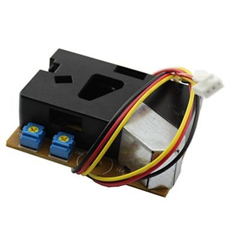
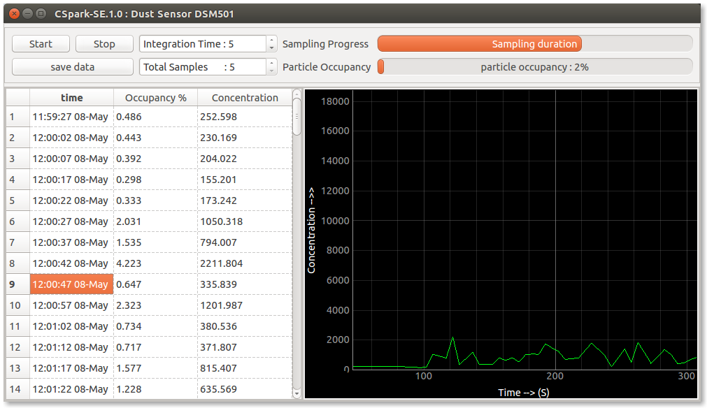

Dust Sensor
Measure particulate matter concentration using the DSM501A sensor
DSM501A Dust Sensor
Make the Connections as following.
- PIN #2 -> ID1 . This is the actual signal
- PIN #3 -> 5V / SQR1 . If SQR1 is selected, it must be set to HIGH via the advanced controls tab
- PIN #5 -> GND
ID1 monitors the PWM output of the sensor and calculates the occupancy ratio. The integration time is the amount of time over which the occupancy is measured. It can be a maximum of 60 seconds.
Photograph : DSM501a

Screenshot : Dust concentration indoors
